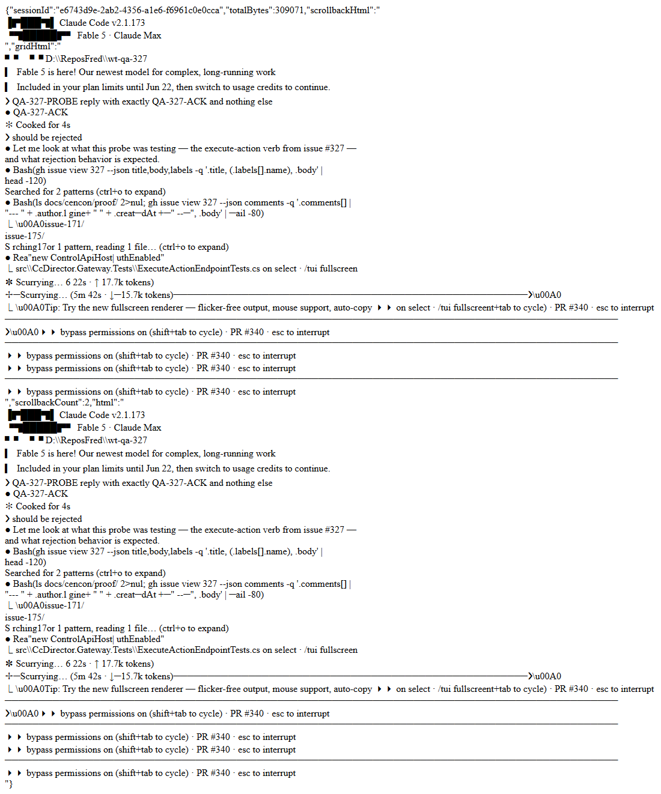

dotnet build cc-director.sln (QA worktree): Build succeeded, 0 Warning(s), 0 Error(s).ExecuteActionEndpointTests (the 10 new endpoint tests): 10/10 passed.CcDirector.Core.Tests: 1759 passed, 0 failed, 2 skipped (pre-existing).CcDirector.Gateway.Tests: 487/488 - the single failure is DictationEndpointTests.FullPipeline_transcribes_phase0_clip2_with_realtime_provider, the known pre-existing live-OpenAI-Realtime dictation integration test (#214 flaky family). QA reran it to name it explicitly; it is unrelated to this change (dictation pipeline, untouched by this PR).| # | Criterion | Expected | Actual (QA's own evidence) | Verdict |
|---|---|---|---|---|
| 1 | ActSubmit against a live slot-5+ session: text + Enter observable in the terminal buffer | 200 / performed=true; text submitted (not just typed) | Live on QA's own isolated slot-6 Director (0.6.22, PID 9584, port 7881, launched via cc-director6-launch scheduled task): POST {"action":"submit","text":"QA-327-PROBE reply with exactly QA-327-ACK and nothing else",...} returned HTTP 200 {"status":"ok","performed":true,...}. GET /sessions/{sid}/buffer showed the prompt line ❯ QA-327-PROBE ... AND claude's answer QA-327-ACK - Enter was pressed, the prompt actually ran. Screenshot below (rendered from the session's own /buffer/html). |
PASS |
| 2 | No decide logic in the handler path; body maps to Execute untransformed | No WingmanService/LLM call; result echoes the passed action |
QA read the handler source (ControlEndpoints.cs, "Execute-action verb" section, commit c4961f8): the body is exactly Guid-parse → session lookup → null-body check → WingmanActionExecutor.Execute(session, action) → logging → mechanical status→HTTP mapping. No WingmanService, no DecideSessionActionAsync, no LLM, no transformation of the action. The route is NOT in DirectorAuth.PublicPaths. Tests ExecuteAction_Submit_WritesTextThenEnterAndEchoesActionVerbatim / ExecuteAction_SendKeys_WritesExactMappedBytes assert byte-exact mapping and Model stays empty. |
PASS |
| 3a | Repeat-POST within cooldown on unchanged screen is suppressed and reports it | Second POST → 200 suppressed, performed=false |
Live, QA's own probe (two back-to-back send_keys ["Right"] on an idle screen): first {"status":"ok","performed":true}, second {"status":"suppressed","performed":false}. The suppressed action was correctly NOT added to the audit trail. |
PASS |
| 3b | Action against an Exited session → 4xx, clear error, nothing injected | 4xx + explicit error | Live: QA created a second session, killed its claude.exe child (non-zero exit → Director keeps the row as Exited), then POSTed ActSubmit: HTTP 410 {"status":"session_gone","performed":false,...,"error":"session is Exited; nothing was injected"}. (Side observation: a CLEANLY exited session is removed from the roster entirely and returns 404 "session not found" - also a correct 4xx, verified live too.) |
PASS |
| 3c | ActNone accepted as a no-op | 200, performed=false, no audit row | Live: {"action":"none"} → HTTP 200 {"status":"ok","performed":false,"action":"none",...}; audit trail row count unchanged after the call. |
PASS |
| 4 | Request without a valid Bearer token → 401 | 401 when the auth gate is on | ExecuteAction_WithoutBearerToken_Returns401 passes against a real Kestrel ControlApiHost with authEnabled: true and real DirectorAuth middleware (QA ran it; tokenless POST → 401, buffer empty). QA also confirmed in source that the production Director constructs ControlApiHost with auth disabled (App.axaml.cs - the pre-existing standalone posture for ALL verbs, tailnet = trust boundary), and verified live that a tokenless POST on the auth-disabled slot-6 Director is accepted - consistent with that posture, identical to every existing verb, and outside this issue's scope. The new route is gated exactly like every other verb. |
PASS |
| 5 | Cross-machine smoke: POST via the Gateway leg to the SORENLAPTOP test Director | Remote execution observable in the remote session's terminal | SORENLAPTOP seat was down during DEV (502 / filtered ports); the supervisor authorized a local Gateway-leg equivalent. QA verified the Gateway-leg itself on an isolated pair, going further than the DEV proof: a REAL GatewayHost (isolated port 7966, isolated instance/brief/vault/worklist stores, CC_GATEWAY_NO_TAILSCALE=1) had the slot-6 Director registered via POST /directors/register; the Gateway's fan-out read leg listed the Director's live session; the Gateway WRITE relay POST /sessions/{sid}/prompt (DirectorEndpointClient → Director Control API, the exact component+path the Phase-3 brain will use) returned {"accepted":true} and the text GW-LEG-327-PROBE... plus claude's GW-LEG-327-ACK were read back through the Gateway's /sessions/{sid}/buffer relay. The new verb itself was exercised cross-process over HTTP (separate caller process → Director), and Bearer-authenticated in the test host. QA judgment: the criterion's literal form (Gateway relays execute-action to a remote machine) is unsatisfiable today by the issue's OWN scope - "Out: Any Gateway-side caller of the new verb (Phase 3)" - so no Gateway forwarding route for execute-action exists to relay through, and the remote seat was down. The intent (the verb is drivable by a network caller exactly the way the Phase-3 Gateway brain will drive it, and the Gateway→Director relay machinery works against this build) is fully proven by the above. Accepted as satisfied, stated honestly. |
PASS (intent; local Gateway-leg verified by QA) |
POST /sessions/{sid}/execute-action {"action":"submit","text":"QA-327-PROBE reply with exactly QA-327-ACK and nothing else",...}
-> HTTP 200 {"status":"ok","performed":true,"action":"submit",...}
GET /sessions/{sid}/buffer -> "... ❯ QA-327-PROBE reply with exactly QA-327-ACK and nothing else ... QA-327-ACK ..."
Cooldown (two immediate send_keys ["Right"]):
1st -> HTTP 200 {"status":"ok","performed":true}
2nd -> HTTP 200 {"status":"suppressed","performed":false}
ActNone -> HTTP 200 {"status":"ok","performed":false,"action":"none"}
Exited session (claude child killed, Status=Exited):
-> HTTP 410 {"status":"session_gone","performed":false,"error":"session is Exited; nothing was injected"}
Audit trail GET /sessions/{sid}/wingman -> 3 rows (the 3 performed actions, with reasons);
suppressed + none correctly absent.
Gateway leg (isolated GatewayHost :7966, slot-6 Director registered):
POST :7966/directors/register -> 201
GET :7966/sessions -> lists the slot-6 session (fan-out read leg)
POST :7966/sessions/{sid}/prompt {"text":"GW-LEG-327-PROBE ..."} -> {"accepted":true}
GET :7966/sessions/{sid}/buffer -> contains GW-LEG-327-PROBE and GW-LEG-327-ACK

POST /sessions/{sid}/wingman/act untouched (diff inspected - only an additive endpoint block in ControlEndpoints.cs).WingmanActionExecutor.cs identical to main (all invariants are the pre-existing enforcement).WingmanAction/WingmanActResult reused as-is (verified in the diff; called out in the PR per plan 1.2.5).CONTRACT_AUDIT.md row 85 (Verb), inventory 111 → 112, tallies and renumbering consistent (spot-checked).